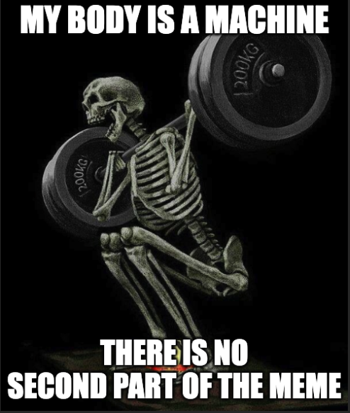

Hand-drawn head and neck atlas
Head and neck anatomy, one layer at a time.
Each diagram is drawn as separate layers. Switch structures on and off, build a structure up from its parts, and zoom in as far as you need.
Diagrams
Each diagram opens in a viewer where every layer can be switched on and off. Where a diagram has labels, they can be shown or hidden too.
Theory
Written notes on head and neck anatomy, region by region, with the textbook source of every section, clinical boxes and links to the diagrams. New regions are added in stages.
Resources
Notes, flashcards and links that go with the diagrams.
Notes, cards and doodles
-
Sumen's notes
Notes by Sumen A that cover various anatomical structures and supplement the diagrams. They are written for ANAT3004 Cranial and Cervical Anatomy at USYD.
-
Anki decks
Eleven flashcard decks, from the skull and foramina to the oral cavity, nose and pharynx.
-
Legacy lab doodles
Some lab diagrams I drew earlier, kept as a gallery.
-
Gene's neuroanatomy notes
Gene Park's hand-drawn neuroanatomy notes as one detailed PNG. The file is too large to display reliably in a browser, so it opens on Google Drive.
Elsewhere on the web
-
Musculoskeletal system 3D model
A complete 3D model from the MSD Manuals.
-
AnatomyGo
A free Atlas (possibly AI generated) but still nice to examine
-
IMAIOS e-Anatomy: head and neck
Useful 3D images and overlapping diagrams.
-
Sam Webster on YouTube
Some good anatomy videos.
-
BlueLink Anatomy
Very comprehensive anatomy overview by the University of Michigan
-
Earth's Labs
Some very nice diagrams and drawings (especially for cervical fasciae)
-
UNSW timeline of human development
Embryology for those really interested
-
Pathology Outlines
Moving away from pure anatomy, now we look at the pathology
About
This is a study aid I draw and keep updating. Each diagram is built from separate layers, so you can add one structure at a time or strip a drawing back to the bones.
Many of the drawings are composites of illustrations from Netter's atlas, or tracings of images found online, so they are not all strictly original. Where I can, I add my own labels or redraw parts to show the anatomy more thoroughly.
I cannot guarantee that every drawing or spelling is accurate. If you spot a mistake, or want to request something, email business.alexander.he@gmail.com.
Sumen A made the PDF notes, and Frank Netter's drawings inspired many of the diagrams.
The diagrams work on phones and tablets, but a diagram with many layers loads a lot of image data and can be slow on older devices. A laptop is still the most comfortable way to use them.
